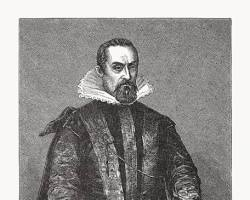

📘 Capacité B.O. : PFD et mouvement circulaire dans un champ de gravitation
À la mort de Tycho Brahe en 1601, ses observations reviennent à son assistant, Johannes Kepler, mathématicien impérial à Prague. En reprenant les mesures de la trajectoire de Mars, Kepler établit une loi purement géométrique. Une note plus tardive, insérée dans son carnet par un successeur, y ajoute le raisonnement dynamique — celui que popularisera Newton — pour retrouver ce résultat par le calcul.

Johannes Kepler, mathématicien impérial
🔍 Observez le bureau de Kepler ci-dessous et survolez-le pour révéler la note ajoutée à son carnet.
Étape 1 — Reconstituer le raisonnement
Glissez-déposez les cinq étapes ci-dessous dans le bon ordre pour reconstituer la méthode permettant d'établir la vitesse d'un satellite en orbite circulaire à partir de la 2e loi de Newton.
⠿ Utiliser l'expression de l'accélération dans le repère de Frenet pour un mouvement circulaire.
⠿ Appliquer la 2e loi de Newton (PFD).
⠿ Choisir le système {satellite S, masse m} et le référentiel d'étude (galiléen).
⠿ Identifier terme à terme pour en déduire v, puis T.
⠿ Identifier la seule force extérieure : la force de gravitation exercée par l'astre.
1
Déposez ici
2
Déposez ici
3
Déposez ici
4
Déposez ici
5
Déposez ici
Étape 2 — Application numérique
r = 4,22×10⁷ m | MTerre = 5,97×10²⁴ kg | G = 6,67×10⁻¹¹ N·m²·kg⁻²
Question 2.1 : Un satellite terrestre décrit une orbite circulaire de rayon r autour de la Terre. En appliquant la méthode reconstituée, on obtient v = √(GM/r). Calculez la valeur de v (en km·s⁻¹).
Question 2.2 : La période orbitale correspondante vaut T = 2πr/v ≈ 23 h 56 min, soit très exactement un jour sidéral (durée de rotation de la Terre sur elle-même). Comment appelle-t-on ce type de satellite, qui reste fixe au-dessus d'un même point de l'équateur ?
📝 Note du carnet de Kepler déchiffrée !
v ≈ 3,07 km·s⁻¹ — la démonstration dynamique retrouve exactement la loi géométrique de Kepler.